Gwerz Santez Koupaia Langoad
La gwerz de Sainte Pompée de Langoat
The Ballad of Saint Pompey of Langoat
Chant tiré du 2ème Carnet de collecte de La Villemarqué (pp. 262 - 268).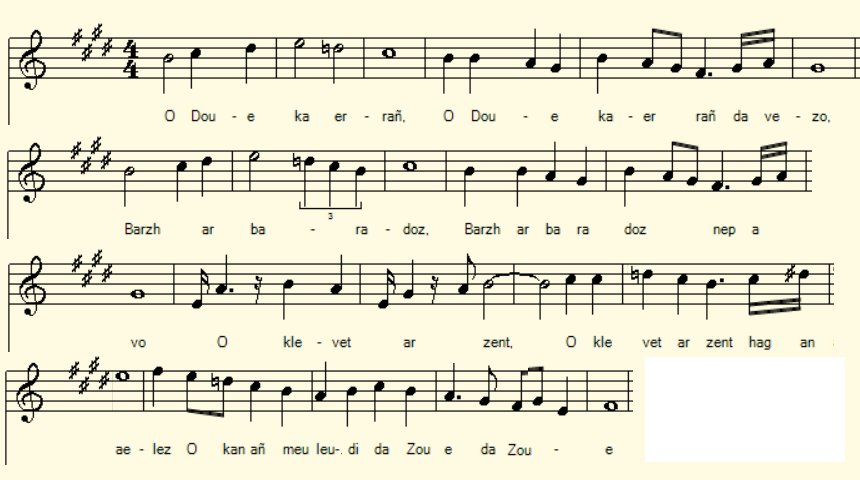
Mélodie
Arrangement Christian Souchon (c) 2020
|
A propos de la mélodie On peut être certain que la mélodie de cette gwerz est perdue. C'est Narcisse Quellien, dans "Chansons et danses des Bretons", (Maisonneuve et Leclerc, Paris, 1889), p. 30, qui l'assure: " Autour du tombeau de la veuve sainte Pompée, à Langoat, sont conduits les enfants qui sont en âge de marcher et que leurs jambes frêles refusent de soutenir. Le tour de la tombe achevé, l'agilité a gagné leurs petits membres. Sainte Pompée, la patronne de Langoat, avait sa gwerz, il n'y a que peu d'années encore; une femme très avancée en âge est, paraît-il, la seule qui ait conservé cette gwerz dans sa mémoire: elle avait l'habitude autrefois de la chanter comme un cantique de pélerinage, en parcourant le bourg de temps à autre. On ne la revoit plus dans le pays et personne ne connaît ni le nom, ni la demeure de cette vieille mendiante." La mélodie qui sert de fond sonore à la présente page est donc donnée à titre d'illustration. A propos du texte Ce chant était connu grâce à un article de A. La Borderie pour la Revue de Bretagne, de Vendée [et dAnjou], 1888, tome 4 (années 1857-1914), pp. 401 - 419, intitulé "Le Gwerz de Sainte Pompée". Il est référencé dans le catalogue Malrieu (tob.kan.bzh) sous le n° M-00314 avec les caractéristiques suivantes: Titre critique breton : Santez Koupaïa (= Sainte Copée) Titre critique français : Sainte Pompée Titre critique anglais : Saint Pompey Résumé : Sainte Koupaïa de Langoat fait de nombreux miracles. Elle a quitté lAngleterre pour gagner son Paradis avec son fils saint Tugdual, évêque de Tréguier et son autre fils, saint Léonor, évêque dAleth (=Saint-Malo). Elle sinstalle à Langoat pour y vivre en ermite et y être enterrée. Tugdual répond : « Vous viendrez à léglise paroissiale, jhabiterai à Minihy, mon ami Gonnéry ira à Plougrescant. Nous penserons les uns aux autres en entendant sonner les cloches ». Sainte Koupaïa de Langoat aide tous les gens pauvres, rend la santé aux sourds, aux aveugles, sauve une femme en mal denfant alors que tous la croyaient perdue. Elle sauve aussi dun puits deux enfants qui y étaient restés trois jours complets, pendant que lhomme et la femme saccusaient réciproquement à tort de les avoir tués. Gens de tous pays, accourez au pardon de Langoat, demandez à sainte Koupaïa la gloire de la Trinité. L'article de La Borderie Cet article constituait jusqu'ici l'occurrence unique de cette gwerz. Il y citait in extenso une version reconstituée à partir de 2 versions collectées. Il écrit p. 405: "La gwerz de sainte Pompée (Gwerz santez Koupaïa[= Complainte de sainte Copée]) nous a été transmise, ainsi que sa traduction par M. l'abbé J.M. Le Pon, qui, en nous l'adressant, a bien voulu nous donner les renseignements qui suivent: - 1° "M. l'abbé Y. Rivoallan, mort il y a quelques années, recteur de Langoat, ... m'avait remis un texte de cette gwerz, recueillie par lui dans la tradition de sa paroisse, mais quelque peu arrangé dans les termes. - 2° Aidé de cette version, j' ['Abbé J.M. Le Pon, vicaire de la cathédrale de Tréguier] en recueillis moi-même un autre texte, il y a douze ans [au plus tard en 1876], de la bouche d'une ... octogénaire [née au plus tard en 1796] qui habitait le Minihi - Tréguier (breton: Ar Vinic'hi, 22). Dans la version populaire, soit du Minihi, soit de Langoat [telle que l'abbé Le Pon a pu l'identifier dans le texte de l'abbé Rivoallan], je n'ai pas trouvé quelques couplets marqués (*7) à (*9) et (*21)... communiqués par M. Rivoallan et que peut-être il avait ajoutés pour compléter, à son point de vue, l'histoire de l'émigration de saint Tugdual..." L'abbé Le Pon distingue 3 parties: - strophes (1) à (19): partie la plus ancienne qui concerne la vie de la sainte, les 2 autres parties ayant trait à des miracles opérés après sa mort: - strophes (20) à (34): l'accouchement miraculeux; - strophes (35) à (61): le miracle des deux enfants noyés. La version du 2ème carnet de collecte de La Villemarqué Le texte que La Villemarqué a consigné pp. 262 à 268 de son 2ème carnet a été recueilli vraisemblablement en 1879 comme le précédent, chanté par Marie Le Grouérez le 5 septembre 1879 et le suivant, chanté par la mère de celle-ci, Marie Bellec. Ces deux chants ont pour sujet les pêcheurs de Terre-Neuve de l'Aber du Trieux. S'il a donc été collecté à peu près à la même époque que le précédent, il s'en distingue nettement par sa taille (36 quatrains au lieu de 61), sa structure (l'ordre et le nombre des miracles) et de nombreux détails; Il comprend 5 parties: I, strophes 1 à 11: Présentation de Sainte Copée (=Pompée) et de ses fils Tugdual et Gonnéry (qui n'est donc pas ici simplement un ami de la sainte); leur venue en Armorique et leurs sanctuaires. II. strophes 12 à 19: Le miracle des enfants noyés. III. strophes 20 à 26: L'accouchement miraculeux. IV strophes 27 à 34: Le miracle des marins sauvés. V strophes 35 et 36: La vision de l'enfer et du paradis (correspondant aux strophes (2) et (3) de la version Rivoallan). Dans sa lettre à Ernault du 28 novembre 1879 (cf.chant précédent, « à propos de la mélodie »), La Villemarqué évoque « une légende très ancienne » chantée par une vieille paysanne du Trégor. C'est certainement le présent chant (cité par Gourvil, p.262). |
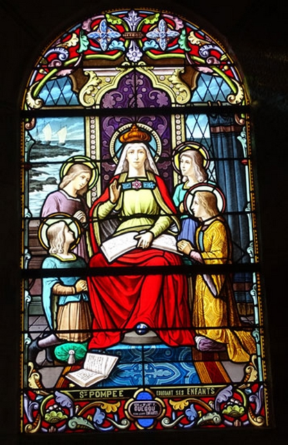 Sainte Pompée et ses enfants Hoël II, Tugdual, Sève et Lunaire Eglise de Trézény 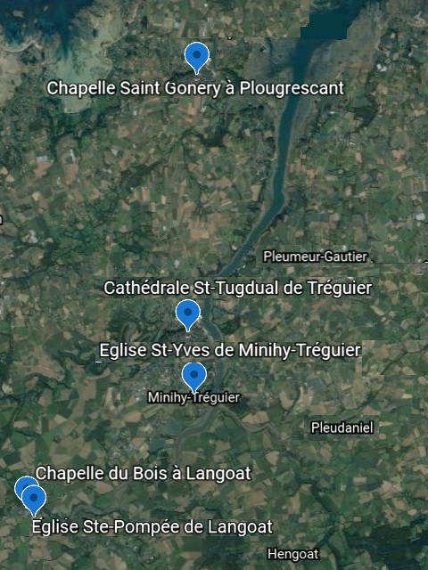 |
About the melody We can take for granted that the melody of this gwerz is lost. Narcisse Quellien, in "Chansons et danses des Bretons", (Maisonneuve and Leclerc, Paris, 1889), p. 30, asserts it: "To the tomb of the holy widow Saint Pompey, in Langoat, children are led who are old enough to walk, but whose frail legs refuse to carry them. Once they have gone all around the grave, their little limbs should have regained their agility. Saint Pompey, Langoat's patroness, still had a gwerz of her own only a few years ago. A very old woman is, apparently, the only one who has kept this gwerz in her memory. She was formerly used to sing it, from time to time, as a pilgrimage hymn, on the village streets. We no longer see her here around, and no one knows either the name or the dwelling place of this old beggar woman. " The melody which serves as a sound background for this page is given by way of illustration. About the lyrics This song became known via an article by Arthur de La Borderie for the Revue de Bretagne, de Vendée [et d'Anjou], 1888, volume 4 (years 1857-1914), pp. 401 - 419, entitled "The Gwerz of Saint Pompey". It is referenced in the Malrieu catalog (tob.kan.bzh) under item M-00314 with the following characteristics: - Breton critical title: Santez Koupaïa (= Sainte Copée) - French critical title: Sainte Pompée - English critical title: Saint Pompey - Summary: Saint Koupaïa of Langoat works many miracles. She left England, to deserve Paradise, with her son Saint Tugdual, Bishop of Tréguier and her other son, Saint Léonor, Bishop of Aleth (= Saint-Malo). She moved to Langoat to live as a hermit and be buried there. Tugdual ojected to it: - "You shall come to the parish church, I shall live in Minihy. My friend Gonnéry shall go to Plougrescant. We will greet each other by making the bells of our churches ring . Saint Koupaïa of Langoat helps all poor people, restores health to the deaf and the blind. She saved a child-seeking woman when everyone thought she was doomed to die. She also rescued two children fallen into a well, though they had been there for three full days, while the man and woman wrongly accused each other of having killed them. People of all countries, let us hasten to Langoat's Pardon celebration, and pray to Saint Koupaïa for sharing in the glory of Trinity! The article by Arthur de La Borderie This article was so far the only occurrence of this gwerz. It quoted in full lyrics reconstituted from 2 collected versions. La Borderie writes p. 405: "The gwerz of Saint Pompey (Gwerz santez Koupaïa [= Ballad of Saint Copée]) was passed onto us, along with a translation, by Abbé JM. Le Pon, who, in sending it to us, kindly gave us the following information: - 1 ° "Abbé Y. Rivoallan , who died a few years ago was the vicar of Langoat. He ... had sent to me a copy of this gwerz, as collected by him in his parish, though somewhat arranged. - 2 ° Beside this version, I [ Abbé JM Le Pon, vicar of the cathedral of Tréguier ] collected (and restored) another text, twelve years ago [at the latest in 1876], from the singing of an ... octogenarian woman [ - born in 1796 at the latest -] who lived at Le Minihi - Tréguier (Breton "Ar Vinic'hi"). In the genuine folk song, of either Minihi or Langoat [as Abbé Le Pon was able to identify it within Abbé Rivoallan's text], I failed to find a few couplets marked with an asterisk, (* 7 ) to (* 9) and (* 21) ... sent in by M. Rivoallan, which I suspect he had added to "complete", from his point of view, the history of the emigration of Saint Tugdual ... " Abbé Le Pon distinguishes 3 parts in the ballad: - stanzas (1) to (19): The oldest part which refers to the life of the Saint, the other 2 parts relating to miracles operated after her death: - stanzas (20) to (34): The miraculous childbirth - stanzas (35) to (61): The miracle of the two drowned children. La Villemarqué's 2nd collection book version The text that La Villemarqué recorded on pp. 262 to 268 of his 2nd notebook was probably collected in 1879 like the previous one, sung by Marie Le Grouérez on September 5, 1879 and the following one, sung by her mother, Marie Bellec. These two songs involve Firth of Trieux whalers on their way to Newfoundland. Both versions were therefore collected around the same time. However they are clearly different by their size (36 quatrains instead of 61), their structure (the order and number of miracles) and many particulars; La Villemarqué's song consists of 5 parts: I, stanzas 1 to 11: Presentation of Saint Copée (= Pompée) and of her sons, Tugdual and Gonnéry (a son and not a mere friend of the saint's); their coming to Armorica and their sanctuaries. II. stanzas 12 to 19: The miracle of the drowned children. III. stanzas 20 to 26: The miraculous childbirth. IV verses 27 to 34: The miracle of the saved sailors. V stanzas 35 and 36: The vision of Hell and Paradise (roughly corresponding to stanzas (2) and (3) in the Rivoallan version). In his letter to Ernault of November 28, 1879 (cf. previous song, "About the melody"), La Villemarqué evokes "a very old legend" sung by an old peasant woman from Trégor. It is certainly the present song (quoted by Gourvil, p.262). |
1° Version La Villemarqué, Carnet N°2, pp. 262 - 268
Les n° de strophes sont suivis, entre parenthèses, de ceux des strophes correspondantes, s'il en existe, dans la version 2 (Le Pon, Rivoallan).The numbers of stanzas are followed, in parentheses, by those of the corresponding stanzas, if any, in version 2 (Le Pon, Rivoallan).
|
p. 262 I. 1. (1) O Doue kaerrañ da vezo, Barzh ar Baradoz, nep a vo O klevet ar zent hag an aelez O kanañ meuleudi da Zoue! 2. Santez Koupaia he-deus graet Ar pezh ne rafe den ebet, (4.3) O kuitaat he bro a Vro-Zaoz Vit gounit hent ar baradoz. 3. (6) Dont ra he map Tual dezhi Hag he mabig Sant Goneri Dek ha tri-ugent ez int deuet, Eus an holl Zent ha Santezed. 4. (10) Santez Koupaia a lare, Chapel ar C'hoad pa dremene: - Amañ ez eo ar plas santel, 'M-eus choazet d'ober pinijenn; p. 263 5. (11) Amañ ez eo ar plas santel, 'Meuz choazet d'ober pinijenn. Amañ ar plas am-eus choazet Ma vije ma c'horf interet. - 6. (12) Na Sant Tual a responte D'he vamm Koupaia a-neuze: - Salokras, mamm, ne vefet ket En iliz-parrez e teufet. 7. (13) Salokras, mamm, ne vefet ket En iliz parrez e teufet. Hag en iliz pe er vered Ur chapel d'eoc'h a vo savet. 8.(14) Ha me yel' da zevel ma zi D'ar barrez vraz er Vinic'hi. Me zavo ma zi er kreiz-ker, En iliz-veur a Landreger. - (Santez Koupaia a lavare): 9. (15) - Na c'hwi, ma mabig Goneri, Na yelo ket a-bell diouzhin? - Diouzhoc'h n'in ket ivez, ma mamm, Me yel da barrez Plouc'houskan. - (Plougrescant) p. 264 10. (18) - Ma mab Goneri, din larit: Pet gwech er bloaz 'teufet d'am gwel't? - Teir gwech er bloaz 'z in d'ho kwelet; Mar n''eo 'n ur c'herzhed, 'vin douget. - 11. Gwechall un amzer a zo bet Douget ar sant gant daou veleg, Gant daou veleg war o divskoaz, Deuet da welet Santez Koupaia. II 12. (20) Santez Koupaia a Langoed, A ra burzhudoù mar zo bet, Nag ha war vor ha war an douar, A gonzol nep en-deus glac'har. 13. (36) Ar c'hentañ burzhud he-deus graet, E keñver 'n 'intañv ad-dimeet, E keñver 'n 'intañv ad-dimeet, Daou vugel e c'hentañ pried. p. 265 14. (37) Mont a ra r' lezvamm maez an ti An daou vugel kerkent ha hi (38.3) Ma kouezh 'n hini bihan d'an dour, An hini braz 'vit eñ sikour : 15. (38.3) An hini braz 'vit eñ sikour - Gwerc'hez ! Koue(zh)et int o-daou en dour ! 16. (41.1) An teodoù fall n'int ket manket; D'an intañv paour o-deus laret: (44.1) - Lac'het he-deus ar vugale, Vit kaout gwell d'eus o danvez. - 17. (43.1) An intañv kristen a lare D'ar c'hwregig yaouang a-neuze: (44.2) - Mar na roez ma bugale din Me gerc'ho archerien d'am zi. - 18. (47.1) - Santez Koupaia benniget, Grit-c'hwi ur mirakl em andret! Lakait ar wirionez 'n he flas (29.1) (30.4) Me roy ma dilhad euret deoc'h. - p. 266 19. (54) Oa ket ar ger peurechuet, Ar vugale a zo klevet, Klevet ar vugale en dour 'Chervel o lezvamm d'o sikour. III 20. (22) An eil burzhud en-devez graet 'N andret daou den nevez-dimeet Ar c'hwreg klañv-braz a zo chomet Gant an holl e oa dilezet. 21. (23) Klasket zo de(zh)i medesined, Chirurjianed ha doktored D'aozañ 'nezhi. N'oa ket kavet Gant an holl e oa dilezet. 22. He fried paour p'en-deus gwelet D'ar Wreg enoret en-deus eñ aet ; (30.4) 'Kichen ar Gwreg 'daoulinas Ha da bediñ en-em lakaas : 23. (31.3) - Santez Koupaia benniget, Grit ma vo ma bugel bade(z)et Mar ne oar ket an hent d'ho ti Met gant gras Doue goût e ri. (Au crayon sous le n° 266 à l'encre.:) 24. (32.3) Ma gwellañ buoc'h a zo em zi (*) E foar ho pardon me gwerzhi. An arc'hant deoc'h a vo kaset. - (33.1) Barzh an ti neuz' eo distroet 25. (33.2) An ozac'h paour a zo gwelet Gwelet he briet en-deus graet (34.2) Ha ganti daou a vugale Ne vanke de(zh)e met badeziant: 26. (35.1) - Santez Koupaia a Langoet C'hwi ra burzhudoù mar zo bet. Nag ha war vor ha war an douar, A gonzol nep en-deus glac'har. p. 267 IV 27. An trede burhzud he-deus graet Oa e-keñver tud ambarket War ul lestrig a Vontroulez Gant an amzer fall oa kollet. 28. Ar c'habiten a lavare D'ar verdeidi paour neuze: - En añv Doue, ma martoloded, Savit mat, savit ! Mar gellit! 29. Ur mousig bihan oa gante D'ar c'hapiten a lavare : - Santez Koupaia a Langoet A ra burzhudoù mar zo bet... - 30. War bont al lestr int daoulinet Da bediñ int en-em lakaet, Ar c'hapiten a lavare Da Zantez Koupaia neuze: 31. - Santez Koupaia benniget Grit-c'hwi ur burzhud em andret! Santez Koupaia benniget Grit-c'hwi ur burzhud em andret! p. 268 32. Ma merdeidi roy pep a skoed. Ma mamm-me a roy daouzek. Me ma-unan, me roy daou skoed Hag ouzhpenn lakain 'n oferenn-bred. - 33. Oa ket e c'her peurechuet E bord ar c'hae int 'n-em gavet, E bord ar c'hae en Montroulez , E-lec'h ma oant bet aliez. 34. (4.1) Santez Koupaia a Langoet, C'hwi ra burzhudoù mar zo bet, War ar mor ha war an douar C'hwi ' gomfort nep en-deus glac'har. V 35. (2) An noz, p' emaon hep sklerijenn, A gas ma spered d'an ifern Hag e soñjan-me er poanioù Er poanioù an eneoù. 36.(3) Mez pa welan ar loar sklaer Al loar sklaer, e pep amzer, Al loar sklaer dimeus an noz 'Gas ma ene d'ar baradoz... ===== KLT gant Christian Souchon (c) 2020 |
p. 262 I. 1. O mon Dieu, quel bonheur inouï Sera le nôtre au paradis Au milieu des saints et des anges Chantant sans cesse Tes louanges! 2. Sainte Copée, dit-on, a fait Ce que nulle ne fit jamais: Le Pays saxon elle a fui Pour mériter le paradis. 3. Son fils Tugdual la suivit, Son autre fils, Saint Gonnéry Et soixante-dix autres saints Et saintes prirent ce chemin. 4. Sainte Copée s'arrêta Devant la Chapelle du Bois: - C'est ici le lieu saint, je pense, Où je dois faire pénitence; p. 263 5. Oui, c'est ici le lieu sacré, Où je veux expier mes péchés. Et c'est là, quand viendra la mort Qu'il conviendra d'enfouir mon corps. - 6. Mais Saint Tugdual aussitôt L'a contredite par ces mots: - Mère, il vous faut une autre place: C'est l'église de la paroisse. 7. De vous accueillir, croyez-moi Elle est digne et nul autre endroit. Qu'au cimetière ou dans l'église Une chapelle on vous érige! 8. Moi j'irai bâtir mon logis Dans les terres de Minihi. En ville je l'édifierai: La cathédrale de Tréguier. - (Sainte Copée disait): 9. - Et toi, mon cher fils Gonnéry, T'établiras-tu loin d'ici?. - Je reste près de vous, vraiment: Au village de Plougrescant. p. 264 10. - Cher Gonnéry, combien de fois L'an viendras-tu me voir, dis-moi? - Je viendrai vous voir trois fois l'an, Porté, si ce n'est en marchant. - 11. Il fut un temps par le passé Où c'est par deux prêtres porté, Sur les épaules de deux prêtres, Que Copée le voyait paraître. II 12. Sainte Copée de Langoat, Est connue pour plus d'un miracle Qu'elle fit sur mer ou sur terre, Afin que nul ne désespère 13. Son premier miracle c'était Au profit d'un veuf remarié. Ayant deux enfants en bas âge Nés de son premier mariage. p. 265 14. La marâtre de la maison Sortit avec les deux garçons. Le plus petit tombe dans l'eau; Le plus grand s'élance aussitôt 15. Pour l'aider. Il tombe à son tour: - Tous deux dans l'eau! Vierge, au secours! - 16. Plus d'une langue de vipère Aussitôt suggérait au père: - Elle a noyé les deux gamins, Pour mieux profiter de leurs biens. - 17. Tout chrétien qu'il fût, le veuf dit A la jeune femme ceci: - Rendez-moi mes enfants, sinon Les gendarmes vous saisiront. - 18. - Sainte Copée, sainte bénie, Un miracle pour moi, je vous prie! Qu'éclate donc la vérité! Mon manteau nuptial, vous l'aurez! - p. 266 19. Alors qu'elle achevait ces mots, L'on entendait des voix dans l'eau: C'était bien les voix des enfants: - Vite, à l'aide, belle-maman! - III 20. Son second miracle: apporter Son aide à deux jeunes mariés. La femme était en mal d'enfant Sans qu'aucun docteur soit présent. 21. On en avait bien fait venir. Aucun n'avait pu la guérir. Docteurs, chirurgiens, tous d'accord Pour l'abandonner à son sort. 22. Mais le pauvre époux, éperdu, Vers la noble Dame s'en fut ; Et, mettant les genoux à terre Il prononça cette prière: 23. - Sainte Copée, faites en sorte De baptiser l'enfant que porte Ma femme. Elle est clouée au lit Mais la grâce de Dieu suffit. (Au crayon sous le n° 266, à l'encre.:) 24. Le plus beau boeuf en mon étable, Qu'on le vende à votre pardon De l'argent l'on vous fera don. - Puis il rentra voir la malade. 25. Et il vit sa femme, vraiment, Accouchée de deux beaux enfants, Prêts à recevoir le baptême Et cela fut fait le jour même. 26. - Sainte Copée de Langoat, Vous seule faites ces miracles Qui sur la mer, tout comme à terre, Nous consolent de nos misères. p. 267 IV 27. Troisième miracle, à présent: Et c'est à bord d'un bâtiment, Un petit bateau de Morlaix Que la tempête menaçait. 28. Et le capitaine disait Aux pauvres marins harassés: - Debout, avec l'aide de Dieu, Debout les gars! Sauve qui peut! 29. Un petit mousse était à bord. Au capitaine il dit alors: - Sainte Copée de Langoat Fait, croyez-moi, plus d'un miracle...- 30. Tous s'agenouillent sur le pont Et commencent une oraison, Le capitaine déclara A sainte Copée, ce jour-là: 31. - Sainte Copée, mère bénie, Un miracle je vous en prie! Sainte Copée, mère bénie, Un miracle je vous en prie! p. 268 32. Chacun de nous donne un écu. Ma mère en donne douze en plus. Et moi-même j'en offre deux, Plus un service religieux. - 33. A peine disait-il ces mots Qu'ils se trouvaient au bord de l'eau, A quai dans le port de Morlaix Où d'habitude ils accostaient. 34. Sainte Copée de Langoat, Vous faites de bien grands miracles Sur la terre et sur l'océan, Pour ceux dont le coeur est dolent. V 35. La nuit, quand règnent les tenèbres, Mon esprit descend vers l'Erèbe, Songe aux souffrances inhumaines Des âmes qui sont dans la peine. 36. Mais lorsque je vois que s'allume, - Et quel que soit le temps -, la lune, La lune claire dans la nuit, Mon âme monte au paradis... ===== Traduction Christian Souchon (c) 2020 |
p. 262 I. 1. O my God, what great happiness Will be ours in paradise In the midst of saints and angels Singing Thy praises! 2. Saint Copée is said to have done What no woman ever did: The Saxon Country she fled To take the path of paradise. 3. Her son Tugdual joined her, Her younger son, Saint Gonnéry, And seventy other saints And holy women came with her. 4. Saint Copée stopped In front of the Wood Chapel: - Here is the holy place, I think, Where I choose to do penance; p. 263 5. Yes, this is the sacred place, Where I choose to atone for my sins. And there, when death will come, I want my body to be buried. - 6. But Saint Tugdual immediately Gainsaid with these words: - With your leave, Mother, it shall not be. The parish church awaits you. 7. With your leave, Mother, it shall not be. To the parish church you shall go. Whether in churchyard or within the church A chapel for you shall be erected! 8. As for me, I will build my house Somewhere within the monastic asylum. Besides, in town I will build a church: It will be the cathedral of Tréguier. - (Saint Copée said): 9. - And you, my dear son Gonnéry, Will you settle far from me ? - I will stay close to you, I will: I'll go to the parish Plougrescant. p. 264 10. - Dear Gonnéry, say, how many times In a year will you come to see me? - I will come to see you three times a year. They shall carry me, if I can't walk. - 11. There was a time in the past Where it was by two priests carried, Aye, carried on their shoulders, That Copée saw her son appear. II 12. Saint Copée of Langoat, Is known for many a miracle Whether she did it on sea or on land, To comfort people in despair 13. Her first miracle was For the benefit of a remarried widower. Who had two small children Born from his first marriage. p. 265 14. The stepmother once Went out with the two boys The younger one fell into the water, The elder one immediately plunged. 15. To rescue his brother he plunged. - The both drown in the water! Holy Virgin, help! - 16. More than one viper tongue Immediately told the father: - Your wife drowned these two kids, To benefit from their property. - 17. A true Christian though he was, the widower said To his young wife: - Give me back my children, or I call in constables to seize you. - 18. - Saint Copée, blessed holy Lady, A miracle for me, please! Let the truth come out! I promise you, in trade, my wedding coat! - p. 266 19. She had not spoken out these words, When voices were heard in the water It was the children's faint voices: - Quick, help us, dear stepmother! - III 20. As her second miracle she extended Her help to two newlyweds. The woman was in the pains of childbirth, Without a doctor to assist her. 21. Many doctors were called But none could bring about the delivery. Physicians, surgeons, all agreed To abandon her to her fate. 22. Now the poor husband, in despair, To the noble Lady went away; And, kneeling down before her image He said this prayer: 23. - Saint Copée, make sure that The child carried by My bedridden wife be christened So help us God's grace (In pencil under n ° 266, in ink. :) 24. The stateliest cow in my stable, Be sold on your behalf on your next Pardon feast The takings will be donated to you. - Then he returned to see the patient. 25. And when he did see his wife She had delivered two beautiful children, Both ready to receive baptism, Which was done the same day. 26. - Saint Copée of Langoat, You alone do these miracles! Wether on the sea or on land, You strengthen us in our hardships. p. 267 IV 27. Of her third miracle I'll tell you now: It was on board a ship, A small ship started from Morlaix That the storm threatened. 28. And the ship's captain said To the poor harassed sailors: - Stand up, with the help of God, Stand up, boys! Save who can! 29. A small ship's boy was on board. To the captain he said: - Lady Saint Copée of Langoat Believe me, has done many a miracle .. - 30. All kneel on the bridge And begin a prayer, The captain declared To Saint Copée that day: 31. - Saint Copée, blessed mother, We beg you for a miracle! Saint Copée, blessed mother, A miracle please! p. 268 32. Each of us gives a crown in reward. My mother will give another twelve. And I myself offer two crowns, As well as a religious service. - 33. He hardly had said these words When they found themselves back ashore, On the quayside in Morlaix harbour Where they were used to dock their ship. 34. Saint Copée of Langoat, You do great miracles On land and on the ocean, For those whose hearts are in trouble. V 35. When darkness reigns My mind descends to hell I think of the inhuman sufferings Of all souls who are in pain. 36. But when I see that lights up the moon Whatever the weather may be The bright moonlight in the night Prompts my soul to fly up to paradise ... |
2° Version Le Pon - Rivoallan
|
Gwerz Santez Koupaïa I 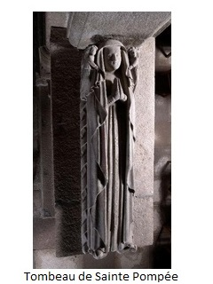 1. O Doue, pegen brao a vo,Er baradoz da neb a vo, Klevet ar zent hag ann Ele, "Kana meulodi da Doue! 2. Pa gan ar chog da hanter-noz, Kan ann Ele er baradoz; Pa gan ar chog da boent ann de, E kanont oll zent hag Ele. 3. Me garfe bean eunn tuik, (1) O klevet kanan ar musik, O klevet kanan de ha noz, Zent hag Ele ar baradoz! II 4. Santez Koupaïa a Langoat, A ra miraklo ha mirakl, Neuz kouiteed he bro Bro-Soz Evit gonit ar baradoz. 5. Merch deur roue deuz a Wened, Goude oe maro he fried, E kimmiadaz dhe bro Berjer Vit geuil he mab da Landreger. 6. Hag he mab sant Tual ha hi, He mignon braz sant Koneri, Tremen tri-chant ha tri-ugent: Sant Tual oa ar chabiten. * 7. Gant-hi oa choaz he merch Seva, Eur brinsez deuz ar zantela, Hag eur mab-all zant Leonor, À 70 bet eskob enn Arvor. * 8. Leonor oe eskop Alet, He zantelez eno neuz gret; Ha zant Tual e) Landreger Ha pab enn Rom, vel ma lenner. * 9. Mont a rez betek penn ar choat, Elech ma man breman Langoat. Eur chapel eno deuz zavet, Vit bevan vel ann ermited, 10. Santez Koupaïa a lere, Chapel ar choad pan arrie: « Aman emanar plas santel, « Elech ma teuin da vervel; 11. - « Aman man r plas enn pehini, « Tei ma chorf paour da interri ; « Ha goude ma vin interret, « Tei pelerined dam gwelet. » 12. - He map Tual a respontaz Dhe vamm Koupaïa phe chlevaz : « Salokroaz, mam, ne veet ket ; « Dann iliz parouz e teufet. 13. - D'ann iliz parouz e teufet, Pe nn eur chapel war ar verred ; Eunn dreil enn dro dhach vo zavet. Eno tei ar belerined. (1) Lutin? esprit? Ou bien peut-être faut-il dire : r eunn tuik, dans un petit coin? (2) Cest le nom quon donne encore à cette chapelle, 14. - Ha me iel da zevel ma zi War barouz nobl ar Vinihi, Me iel da zevel ma mouster (1) Ebarz ar ger a Landreger. 15.- Ma mignon mad (2) sant Koneri, Ne iello ket a-bell diou-in ; Ne iello ket a-bell a-c'han, Pa n a da barouz Plouvouskan. 16. - « Pa glevin-me he gloch o son, « M'ho sonj anehan em chalon ; « Pa vo ma chleier o vrallan, « No sonj anon da vianan. » 17. - Kri ve ar galon ne wélje Enn chapel ar choat ma vije, Hag o klevet an disparti Entre he map Tual ha hi. (1) Il y a "chapel" (chapelle) dans deux versions; la rime est si disparate,que "mouster" semble s'imposer. J'ai trouvé des cas analogues et je ne me prononce pas. Au lieu de mouster et de chapel, puisque les cloches doivent être si belles, (voir le deuxième couplet qui suit), il me semble que l'on dirait bien : « Me a zavo eun niliz kaer. » « Moi, je bâtirai une belle église. » La rime est de cet avis. (2) La version de M. Rivoallan dit kinniterv (cousin). 18. - « Ma map Tual, donet a ri « Eur wech er bla beteg ma zi. «O! ia, ma mam, me a deuio; « Mar ne venn douget, me gerzo. 19. « Ma chouitfez da vean douget, « Ne vije mu evurusted : « Bep bla ne vije ken zerret « Nemet eunn hanter blavez ed. » III 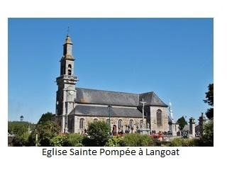 20. Santez Koupaïa a Langoat Vit ann dud kez a zo gwell vad : D'ar re glanv e ro ar ieched. Ha dar re gamm ro ar cherzed. * 21, D'ar re vouzar ro ar c'hlevet, Ar gomz dar re vud deuz roet, D'ar re dall a ro ar gwelet, Tud varo deuz resusited. 22. Ar c'hentan mirakl a deuz gret Nandret eur vroeg neve dimet, Nandret eur vroeg a zeiteg vla, À ea poaniet deuz ar gwasa. 23. Bet eo tri devez ha taer noz, Gant poan vugale hep repoz : Klasket zo bet midisined, Chiurjianed ha doktoret, 24. Ha groage-all deuz ar chontre, A oa intented barz enn-ze, Ha groage-all demeuz ar vro, Dhe farea deuz ar maro. 25. OIl ech ejont emez ann ti; Ne van met he fried gant-hi. Pa deu ann oll dhe dilezel, Neman met enn zonj da vervel. 26. Gant ann oll ech eo kondaonet, EI leur ann ti war eur cholchet. Hag ar vreg paoura levere Ha dhe fried hag a-neuze: 27. « Ma fried paour tostet aman; « Ech on em amzer diwean. « Leket ho torn en em hini: « Breman-zont vo ann disparti 28. « Ha mar beomp dispartiet, « Ann diwan a vo glacharet..... « Ma fried paour, mar am cheret, « Da Goupaïa e vin goestet. 29, « Me rei dei ma habit eured, « À gouste d'in hanter-kant skoed, « Ha choaz ouspenn ma diamant « À devo digan-in kontant. » 30, Hag ann oach pan euz he chlevet, Da graou ar zaout a zo redet; Enn kraou ar zaout pe arriet, Tal ar gwellan eo daoulinet. 31. He daouarn etreseg ann ee, E c houl pardon digant Doue. « Santez Koupaïa a Langoat, « Distreit ouz-in ho taoulagad! 32. « Gret evit ma groeg eur burzud: « Honnez ar gwellan deuz ma zud; « Ha gwellan buch a zo em zi, « Santez vad, a iel dhoch hini. " 33. Ha dann ti ech eo diredet.. . Ar vroegik paour a oa zavet. Da benn ann dol e deuz kerset: Tri de oa ne da gret kammet. 34. Penn ann dol rok eo arriet, Eur mab bian a deuz ganet, Hep zikour digant den e-bed, Nemet ar zantez vinniget. IV 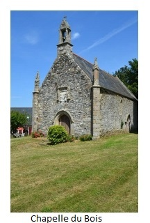 35. Santez Koupaïa a Langoat A ra miraklo ha mirakl, Hag ann eil mirakl a eure, Oa nandret eur vroeg adarre. 36. Nandret eur vroeg neve dimet, Eunn intanv a doa eureujet, Eunn intanv a doa eureujet, Daou vugel oa gant-han chommet. 37. Pa ch ez allez-vamm mez ann ti, Oa ann daou vugel o choari. Eur punz a 0a enn traou al leur. O Doue, zonjomb er maleur! 38. Mont a rejont re dost dehan. Unan nn he a goeaz ennhan., Egile o klask hen zikour A goeaz ive barz ann dour. 39. Ebarz ann ti p'e tistroet, Al lez-vamm oa bet zouezet: E-mez hag e-barz deuz klasket ; Ar vugale ne wele ket, 40. Klasket int bet dre ar chontre, Den ne nevoa gwelet annhe, Den ebed ne neuz ho gwelet.. . Ann oach dar ger diemenet. 41. Ann teodo fall da virviken Zo kab dober krougan ann den : Neuz bosen, na kernez er vro Ve ker yoaz hag ar gwall deodo. 42, D'ann oach ho deuz bet lavaret À oa he vugale lachet, Gant ho lez-vamm gri miliget. Hag ann oach-se en euz kredet. 43, Hag ann oach-se a neuz kredet, Ha dhe vroeg en euz lavaret : « Malloz did, te t euz ho lazet Ha dez tro e vin distrujet. 44. « Te t euz lachet ma bugale, e Evit bevan gant ho danve; « Hag enn beo pe enn maro, « Ma bugale d'in te rento. 45. « Rak me ia da vonet enn ker, « Hag ar justis rei he zever. Malloz dann de meo d'in fellet « Kemerachanout da bried! 46. Kri ve ar galon ne welje, Ebarz ann ti neb a vije. O welet ar vroeg daoulinet, Gant ann archerien chadennet. 41. Pedi a re a galon vad Santez Koupaïa a Langoat, Ma vije r vugale kavet Hag ar wirione diskleriet. 48. Ha dhe fried e deuz laret, E-mez ann ti pa oe deuet : « Ma fried paour, mar am cheret. « Gwested choaz ma habit eured. 49, « Gwested choaz ma habit eured « Ha deuz ho chelo vo klevet, « Rak goud a oar Krouer ar bed « N'eo ket me en euz ho lachet, » 50. Ar pried, pa n euz he c'hlevet, Dann ti raktal zo distroet. Hag enn armel neuz kemeret Ann habit en eur lavaret: 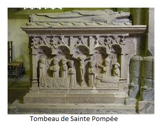 51. « Santez Koupaïa vinniget, « Gret c'hoaz eur burzud em andret: « Kaeran pez dillad zo enn ti, " Koupaïa a iel dhoch hini. 52, « Ouspenn e po eur gouriz koar, « Vit ober ann dro dho touar, " Ann dro dho perred ha dho ti, " Vit dont dhoch oter dalumi. 53. « Neuze roin eur banniel wenn, « Seiz kloch archant en eur renjenn, « Pevar ruban ha glaz ha gwenn, " Hag eunn troad belan dhe dougen. » 54. Oa ket he hir perachuet, Mouez ann daou vugel oe klevet. « Mamm gez,tolet ar zail enn dour, " Evitma chelfomb ho sikour! » 55, Tri de ha taer noz ech int bet Ho daou enn fons ar punz kollet, Chommet eno leun a vue : Kaeran burzud barz ar chontre | 56. War vord ar punz p'int arriet, Ann hini kosan neuz laret: « O klask tapet ma breur bian, « Ech on kouet er punz evel-t-han. » 57. Kri ve ar galon ne welje, Berred Langoat neb a vije, 0 welet ieod glaz ha mein be, Glebiet gant daero ar vroeg-se. 58. Skuill a re daero de ha noz, Ha da Goupaïa re bennoz : Miret e doa dei he bue, Koulz ha hini he bugale. , 59. Mar vije beo dom lann Leon, Oa gwech-al el Langoat person ; Hennez enije lavaret Penoz Koupaïa oa meulet. 60. Treujo houarn ma vije bet, Gant ann treid e vijend uzet. Gant pelerined a beb bro, Kas da Langoat ho fedenno. 61. Tud a beb bro hag a beb n° oad, Direded da bardon Langoat| Santez Koupaïa, goulennet Evid-omb-oll gloar ann Drindet! Evel-se beet gret! |
Gwerz de Sainte Pompée I 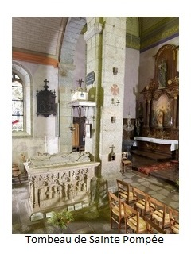 1. O Dieu, qu'il fera bon,pour qui sera au paradis, dentendre les saints et les anges chanter les louanges de Dieu! 2. Quand le coq chante à minuit, les anges chantent auparadis ; quand le coq chante au point du jour, ils chantent tous,anges et saints. 3. Je voudrais être un petit "duz" (1) entendant chanter la musique, entendant chanter jour et nuit les saints et les anges du paradis. II 4. Saïnte Pompée de Langoat, qui fait miracles sur miracles, a quitté le pays de Bro-Soz pour gagner le paradis. 5. Fille dun roi de Gwened, quand son mari fut mort, elle dit adieu à son pays de Berjer, pour suivre son fils à Tréguer, 6. Et son fils saint Tual et elle, et son grand ami saint Goneri, et plus de trois cent soïxante autres : saint Tual était leur chef (leur capitaine). * 7. Avec elle encore étaient sa fille Séva, une princesse de haute sainteté, et un autre fils, saint Léonor, qui a été évéque en Arvor. * 8. Léonor fut évêque dAleth, cest là quil sest sanctifié ; saint Tual le fut à Tréguer, et Pape à Rome, daprès ce qu'on lit. *9. Elle alla jusquau bout du bois (chef du bois) où est aujourdhui Langoat. Elle y a bâti une chapelle, afin d'y vivre comme les ermites. . 10. Sainte Pompée disait, quand elle arrivait à la chapelle du Bois (2) : « Ici est le lieu saint, où je viendrai mourir. 11. « Ici est le lieu dans lequel mon pauvre corps sera enterré ; après quil y aura été enterré, les pèlerins viendront me visiter. » 12. Son fils Tual répondit à Pompée, sa mère, quand il lentendit : « Sauf votre respect, mère, vous ne le serez pas. Cest à léglise de la paroisse que vous viendrez. 13. « À léglise de la paroisse vous viendrez, ou dans une chapelle sur le cimetière; une grille autour de vous sera élevée, là viendront les pèlerins. (1) Lutin? esprit? Ou bien peut-être faut-il dire : r eunn tuik, dans un petit coin? (2) Cest le nom quon donne encore à cette chapelle, 14. « Et moi j'irai bâtir ma maison sur la paroisse noble du Minihy; moi j'irai bâtir mon monastère (1) dans la ville de Tréguer. 15. « Mon ami fidèle (2), saint Goneri, n'ira pas habiter loin de moi, il n'ira pas demeurer loin dici, puisqu'il s'arrête dans la paroisse de Plougrescant. 16. « Quand jentendrai sonner sa cloche, son souvenir me viendra au cur ; et quand mes cloches sonneront au branle, Il se souviendra au moins de moi. » 17. Bien dur serait le cur qui ne pleurerait, dans la chapelle du Bois sil se trouvait, en entendant les adieux que se faisaient son fils Tual et elle! (1) Il y a "chapel" (chapelle) dans deux versions; la rime est si disparate,que "mouster" semble s'imposer. J'ai trouvé des cas analogues et je ne me prononce pas. Au lieu de mouster et de chapel, puisque les cloches doivent être si belles, (voir le deuxième couplet qui suit), il me semble que l'on dirait bien : « Me a zavo eun niliz kaer. » « Moi, je bâtirai une belle église. » La rime est de cet avis. (2) La version de M. Rivoallan dit kinniterv (cousin). 18. « Mon fils Tual, tu viendras une fois l'an jusquà ma « maison. » « Oh! oui, ma mère, je viendrai si lon ne me porte, je marcherai. » 19. « Si lon cessait de t'y porter, Il ny aurait plus de bonheur : on ne récolterait chaque année que mi-année de blé. » III 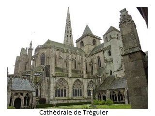 20. Sainte Pompée de Langoat est très bonne pour les pauvres gens: aux malades elle rend la santé, et aux boîteux le marcher. *21. Aux sourds, elle rend louïe, elle a donné la parole aux muets, aux aveugles elle accorde la vue, elle a ressuscité des morts. 22, Le premier miracle quelle a fait, cest en faveur dune jeune mariée, une mariée de dix-sept ans qui était dans une peine extrême. 23. Elle a été trois jours et trois nuits en peine d'enfant continuelle ; on a cherché des médecins, des chirurgiens et des docteurs. 24. Et dautres femmes du pays, entendues en cette sorte d'affaire, et d'autres femmes du pays, afin de la préserver de la mort. 25. Ils abandonnèrent tous la maison; son mari seul est demeuré, En se voyant abandonnée de tous, elle ne songe plus quà mourir. 26. Tout le monde la condamnée, sur un matelas dans la maison. Et la pauvre femme disait à son mari, en ce moment : 27. « Mon cher mari, approchez ici ; je suis à ma dernière heure. Mettez votre main dans la mienne, tout à lheure la séparation aura lieu. 28. « Et si nous sommes séparés, le survivant sera dans la douleur.. . Mon pauvre époux si vous maimez, à Pompée je serai vouée, 29. « Je lui donnerai mon habit de noces, qui me coûtait cinquante écus, et de plus encore mes diamants, quelle aura de moi très contente. » 30. Et quand lépoux la entendue, il a couru à létable : et dès son arrivée à létable, près de la plus belle vacheil sest agenouillé, 31. Ses mains levées vers le ciel, il demande pardon à .Dieu : « Sainte Pompée de Langoat, tournez vers moi vos regards ! 32. « Faites un miracle en faveur de ma femme: elle est ce quil y a de meilleur entre mes parents: et la meilleure vache de ma maison, bonne sainte, appartiendra à la vôtre. » 33. Et à la maison il est accouru la pauvre femme était debout. Elle à marché jusquau bout dela table : voilà trois jours qu'elle n'avait fait un pas. 34. Avant qu'elle fut arrivée au haut de la table, elle avait mis un fils au monde, sans le secours de personne, si ce nest de la sainte bénie. IV 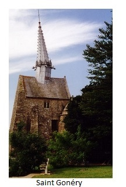 35. Sainte Pompée de Langoat opère miracles sur miracles; le second miracle qu'elle a fait, çà été en faveur dune autre femme. 36. En faveur dune femme nouvellement mariée. Elle avait épousé un veuf, deux enfants lui étaient restés (de son premier mariage.) 37. Quand la marûâtre sortit de la maison, les deux enfants jouaient. Un puits se trouvait au bas de laire. O Dieu, prévoyons le malheur ! 38. Ils s'approchèrent trop près du puits. L'un deux y tomba. L'autre, voulant le secourir, tomba lui-même dans leau. 39. Quand elle a été de retour à la maison, la marâtre sest trouvée surprise : dedans et dehors elle a cherché; elle ne voyait pas les enfants, 40. On les a cherchés dans les environs, personne ne les avait aperçus. personne ne les avait aperçus. Le mari chez lui est appelé. 41. Les mauvaises langues toujours sont capables de faire pendre les gens : il ny a ni peste ni famine au pays qui soient si pernicieuses que les mauvaises langues. 42. À ce mari, elles ont dit que ses enfants avaient été tués par leur marâtre cruelle et maudite. Et cet homme-ci la cru. 43. Et cet homme-ci la cru, et il a dit à sa femme : « Malheur à toi, tu les as tués, et à ton tour tu seras détruite. 44. « Cest toi qui as tué mes enfants, afin de vivre de leur bien ; et vivants ou morts tu me rendras mes enfants. 45. « Car moi je vais en ville, et la justice fera son devoir. Malheur au jour que j'ai eu la velléité de te prendre pour épouse ! » 46. Dur serait le cur qui ne pleurerait, sil se trouvait dans la maison, voyant la femme agenouillée et enchainée par les archers. 47. Elle priait de bon cur sainte Pompée de Langoat, que les enfants fussent retrouvés et la vérité (de son innocence) reconnue. 48. Et à son marielle a dit, quand elle sortit de la maison : « Mon pauvre mari, si vous mainez, promettez encore mon habit de noces. 49. « Promettez encore mon habit de noces, et lon saura de leurs nouvelles, car le Créateur du monde sait que ce nest pas moi qui les ai tués. » 50. Quand le mari la entendue il est rentré dans la maison, et dans larmoire il a pris lhabit en disant: 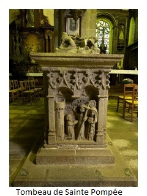 51. « Sainte Pompée bénie, faites encore un miracle en ma faveur ; le plus beau vêtement de ma maison, Pompée, ira dans la vôtre. 52. « De plus, vous aurez un cordon de cire, qui fera le tour de vos terres, le tour de votre cimetière et de votre maison (église) et qui viendra sallumer à votre autel. 53. « Puis je donnerai une bannière blanche, sept cloches d'argent sur le même rang, quatre rubans et bleus et blancs, et un pied de genêt pour la porter. » 54. Il n'avait pas fini de parler, que les voix des enfants furent entendues : « Mère chérie, jetez le seau dans leau afin que nous puissions vous secourir. » 55. Trois jours et trois nuits ils ont été tous deux perdus au fond du puits ; ils y sont restés pleins de vie : quel prodige dans le pays! 56. Sur le bord du puits, quand ils sont parvenus, le plus âgé a dit: « En voulant saisir (sauver) mon petit frère, je suis tombé dans le puits avec lui. » 57. Bien dur serait le cur qui ne pleurerait, sil se trouvait dans le cimetière de Langoat, voyant l'herbe et la pierre des tombes arrosées par les larmes de cette femme. 58. Elle versait des larmes jour et nuit, et rendait grâce à Pompée: elle lui avait conservé la vie aussi bien que celle de ses enfants. 59. Si dom Jean Léon avait vécu, lui qui était autrefois recteur de Langoat, celui-là eût dit combien Pompée était honorée, 60. I] y aurait eu (à léglise de Langoat) des seuils de fer, que les pieds les auraient usés, des pèlerins de tous pays apportant à Langoat leur prière. 61. Gens de tout pays et de tout âge, accourez au pardon de Langoat ! Sainte Pompée, demandez pour nous tousla gloire de la Trinité! Ainsi soit-il ! |
Gwerz of Saint Pompey I 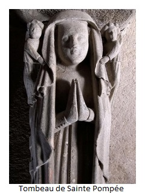 1. - O God, how happy will be those,who, dwelling in paradise, will hear saints and angels sing the praises of God! 2. - When the rooster crows at midnight, angels sing in paradise; when the rooster crows at dawn, all angels and saints are singing. 3. - I would like to be a little "duz" (1) hearing that music and singing, - hearing the song, day and night, of the saints and angels in paradise. II 4. - Saïnt Pompée of Langoat, who works miracle upon miracle, left the country of England On her way paradise. 5. - She was the daughter of a king of Gwened, When her husband died, she left her native country of Berkshire , to follow her son to Tréguer, 6. - And her son Saint Tual, with her, and her great friend Saint Goneri, and over three hundred sixty other people: Saint Tual was their ship's captain (leader). * 7. - With her were also her daughter Séva, a princess of high holiness, and another son, Saint Leonor, who was bishop in Brittany. * 8. - Leonor was bishop of Aleth, this is where he had become a holy man; as had Saint Tual in Tréguer, who, so I have read, was once Pope in Rome. * 9. - She went to Wood's End (a remote place in the wood) called "Langoat" today. She built a chapel there, in order to live like a hermit. . 10. - Saint Pompey said, when she arrived at Wood Chapel (2): "Here is the holy place, where I once shall die. 11. - "Here is the place where my poor body will be buried; Once it is buried there, pilgrims will come to visit me. » 12. - Her son Tual answered to Pompey, his mother, when he heard it: - "With all due respect, mother, you won't be buried here. But in the parish church. 13. - "In the parish church, or in a chapel in the churchyard; a gate around your grave will be raised,: that's where the pilgrims will come. (1) "Duz" =Sprite. Or maybe we should read: "un tuik", "a little corner" (2) This is the name still given to this chapel, 14. - "And I will go and build my house On the noble parish of Minihy; I will go and build my monastery (1) In the town of Tréguer. 15. - My faithful friend (2), Saint Gonéry, will not live far from me, he will not stay far from here, since he'll dwell in parish Plougrescant. 16. - "Whenever I'll hear his bell ringing in the distance, my heart will remember him; and whenever the bells of my church will be ringing, He will, to be sure, remember me. » 17. - Very hard would be the heart that would not cry, being in Woodchapel, on hearing her saying farewell to her son Tual! (1) The word used is "chapel" in both versions but the rhyme is so approximative that "mouster" ought to be preferred. However I admit that I often encountered such inaccurate rhymes. However, instead of mouster and chapel , since the sound of the bells must be so beautiful and far-reaching, (see the second line below), it seems to me that the verse could be as follows: Me a zavo un iliz kaer." I will erect a beautiful church." The rich rhyme corroborates this assumption. (2) The Rivoallan version has kinniterv (cousin). 18. - "My son Tual, you will come once a year to my 'house'. " - " Oh! yes, my mother, I will come if I can't walk, I will be carried " 19. - "If they stopped carrying you over here, There would be no more happiness: We would harvest every year only a half year's crop of wheat. » III  20. - Saint Pompey of Langoat is very compassionate towards poor: to the sick she restores health, and she makes the lame walk. * 21. She makes the deaf hear, she restore their voice to the dumb, to the blind she grants sight, she raised some people from the dead. 22, - The first miracle she performed, Was in favour of a young bride, a seventeen year old bride who was in extreme pain. 23. - She had been three days and three nights in continual child pain; They had looked in vain for doctors, surgeons and physicians. 24. - And other midwives of the country, Conversant with this sort of cases, and other women of the country, in order to keep her from death. 25. - They all had given her up; her husband remained alone, Since she was abandoned by all, she thought her dying day had come. 26. - Since she was left to lie, on a mattress in the house. the poor woman said to her husband, that day: 27. - "My dear husband, come here; My last hour has come. Put your hand in mine, until death takes us apart. 28. - "And when we are separated, the survivor will be in pain .. . My poor husband if you love me, You'll consecrate me and my goods to saint Pompey, 29. - "I want to give her my wedding garment, which cost me fifty crowns, furthermore my diamonds. She will be very grateful to me for it. » 30. - And when the husband heard it, he ran to the stable: and on entering the barn, near the best looking cow, he knelt down, 31. - With his hands raised to the sky, he asked pity from. God: "Saint Pompey of Langoat, turn your gaze to me! 32. - "Perform a miracle for my wife: she is my dearest parent: the best cow in my house, good Saint, if you save her, will belong to you. » 33. - And to his house he ran back The poor woman was standing. She walked to the end of the table: it had been three days since she took a step. 34. - Before she got to the top of the table, she gave birth to a son, without anyone's help, except the blessed saint's help. IV 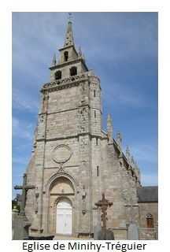 35. - Saint Pompey of Langoat works miracles upon miracles; the second miracle she performed, was in favour of another woman. 36. - In favour of a newly married woman. She had married a widower, who had two children from his first marriage. 37. - Once the stepmother left the house. the two children were playing. There was a well at the bottom of the yard... O God, help us foresee misfortune! 38. - They got too close to the well. One of them fell into it. The other, wanting to help him, also fell into the water. 39. - When she got back home, their stepmother was surprised: inside and outside she searched; she did not see the children, 40. - They looked for them in the yard, no one had seen them. no one had seen them. The husband was called home. 41. - Bad tongues often may cause innocent people to be hung: Neither plague nor famine in a land are so pernicious as they are! 42. - To this husband, they said that his children were killed by their cruel and cursed stepmother. And he believed them. 43. - And he believed him, and said to his wife: - "Accursed woman, you killed them, and in your turn you shall be killed. 44. - "It was you who killed my children, in order to live on their goods; Now alive or dead you shall give me back my children. 45. - "Or else I'm going to town, and justice will do its duty. Cursed be the day when I was so foolish as to take you for a wife! » 46. ??- Hard would be the heart that did not cry, whoever he was in the house, on seeing the kneeling woman being chained by the constables. 47. - She prayed deep in her heart Saint Pompey of Langoat, that the children might be found and the fact that she was not guilty be admitted. 48. - And to her husband she said, when he was leaving the house: "- My poor husband, should you still want to support me, you ought to dedicate to God my wedding dress 49. - "Dedicate to God my precious wedding dress, and we are sure to get news of these children, For the Creator of the world knows well that I did not kill them. » 50. - When the husband heard it he came back into the house, and from a cupboard he took the said wedding dress: 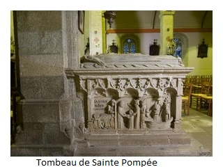 51. - "Blessed Saint Pompey, please, do another miracle for my sake; the most beautiful garment in my house, Saint Pompey, shall be added to yours. 52. - "In addition, you will have a raw of wax candles, all around the whole precincts of your church, churchyard and church itself ending up at your altar which will be lit up by it. 53. - "Then I will give you a white banner, with seven silver bells hanging on it in a row, adorned with four ribbons of blue and white, with a broom wood pole to carry it. » 54. - He had not finished speaking, When the voices of the children were heard: "- Dear mother, throw the bucket in the water so that we may come out and rescue you. » 55. - Three days and three nights they had stayed both of them, down at the bottom of the well; they had stayed there but they were alive: A miracle if ever there was one! 56. - When he was lifted to the edge of the well, the elder boy said: "- It was when I tried to rescue my younger brother, that I fell into the well, too » 57. - Very hard would be the heart that had not cried, Attending in Langoat cemetery, on seeing the grass and the gravestones glittering with the tears of the woman. 58. - She shed tears, day and night, and gave thanks to saint Pompey: who had saved her life along with that of the children. 59. - If Dom Yann Léon had lived, he who was formerly vicar of Langoat, He would have said, better than I do how honoured saint Pompey was, 60. - If Langoat church had had iron thresholds, they would have been worn out by the feet of pilgrims come from all countries to pray in Langoat pilgrimage church. 61. - People of all countries and of all ages, hasten to the Pardon feast of Langoat! Saint Pompey requests it of us all, to the greater glory of the Trinity! Amen! |
NOTES
|
[1] Sainte Koupaïa (= Sainte Copée ou Pompée ou Aspasie) était mère de saint Tugdual, fondateur de lévêché de Tréguier. C'était sans doute la femme dun roi de Gwened (Pays de Galles) et elle était originaire de "Berjer" selon le chant N°2, strophe 5 (sans doute "Bercheria", aujourdhui "Berkshire"). Elle serait venue en Armorique vers 520-530. Le chant 2 dit: "avec 360 autres personnes". Les légendes latines mentionnent 72 moines, d'accord en cela avec la version 1 qui énumère Tugdual, Gonnéry et 70 autres saints. Le nom Pompée dérive d'un "prenomem" latin connu et plusieurs consuls et généraux romains ont porté le prénom de Pompeius. Le plus célèbre fut ami, puis beau-père, puis adversaire de Jules César. La ville espagnole de Pampelune se réfère à ce nom. L'origine du prenomen est "pompea", qui signifie "source". Le nom breton de Santez Koupaia reste proche du latin "copia" qui signifie "coupe". Les deux noms Pompea et Copaia, se complètent sémantiquement. En se référant à l'eau recueiillie dans un vase, ils évoquent la déesse-mère de Rome, Cybèle, parfois appelée "Copia", la Coupe. [2] Langoat Ce toponyme signifie littéralement « monastère du bois ». C'est à l'emplacement de la « Chapel ar Hoad » (Chapelle du Bois), que sainte Pompée aurait établi son ermitage. Le culte voué à cette sainte pourrait avoir des origines préchrétiennes. Le territoire de Langoat est traversé depuis l'époque gallo-romaine par trois routes principales qui se réunissent au lieu-dit actuel Château-Noir / Kastell Du, un peu en amont du gué sur le Jaudy. Par ailleurs, l'église paroissiale de Langoat, dédiée à sainte Pompée, a vraisemblablement été implantée sur le lieu de son inhumation au 6e siècle (sur l'emplacement de la chapelle primitive). Une fontaine homonyme est située dans un talus à une centaine de mètres au nord de l'église paroissiale. [3] La Chapelle du Bois et l'église Sainte-Pompée Il existe à Langoat une autre "Chapelle du Bois", une chapelle seigneuriale construite en 1592 (date portée dans des armoiries du pignon ouest) et modifiée au 19e siècle. Elle a été érigée en chapelle de secours en 1804, pour doubler l'église Sainte Pompée. Cette dernière date vraisemblablement du 13e siècle et a longtemps menacé ruine. L'évêque de Tréguier avait fini par interdire son utilisation le 16 mars 1763. L'ensemble du mobilier de l'église fut mis en sécurité, dont le tombeau à gisant de Sainte-Pompée. L'office fut donc célébré pendant plusieurs années dans la petite Chapelle du Bois. Bien que la tour de l'église Sainte-Pompée porte l'inscription et le millésime suivant : "Decrevit ut domus Dei aedificaretur 1771", "Cette église fut décrétée Maison de Dieu en 1771", l'édifice fut consacré en 1782. Le mobilier est vraisemblablement celui de l'ancienne église. La Chapelle du Bois est aujourd'hui désaffectée. C'est peut-être l'édifice mentionné str. 4 et 5 du chant 1, (str. (10) et (11) du chant 2) ce qui conduirait à dater cette gwerz de la fin du XVI ème siècle. [4] Tombeau de Sainte Pompée Cette sainte femme serait l'épouse du roi Hoël Ier surnommé « le Grand » qui régna sur la Bretagne armoricaine et la mère de sept enfants dont Tugdual, connu comme premier évêque de Tréguier et Léonor ou Lunaire que le chant 1, visiblement, confond avec saint Gonnéry. Peut-être le chant 2 faisait-il la même confusion qui aura été corrigée par l'Abbé Rivoallan. Les strophes (*7) et (*8) - que l'Abbé Le Pon suppose interpolées - mentionnent avec une exactitude encyclopédique, les autres enfants de Pompée: saint Léonor, évêque d'Aleth (Saint-Malo) et sainte Sève, non reconnue par l'Eglise de Rome et dont le frère Albert Le Grand de Morlaix (1637) nous apprend qu'elle reçut de son frère Tugdual une abbaye, aujourd'hui disparue, fondée sur le domaine de l'actuel village de Sainte-Sève à l'ouest de Morlaix. A la mort de son mari en 545, Pompée devient religieuse et se retira dans le monastère de Langoat. Ses restes mortels ont été déplacés en 1370 dans un tombeau faisant mausolée. Il a été ouvert en 1768 à la demande de l'évêque de Tréguier afin d'authentifier les ossements de la sainte et de prélever des reliques. Élevé en granite et en marbre, le mausolée de Sainte Pompée, est orné de panneaux en bas-relief qui racontent l'histoire de la sainte. [5] Saint Tugdual Tugdual deviendra plus tard saint Tugdual, c'est l'un des sept saints fondateurs de la Bretagne: saint Malo ou Maclou ; saint Samson ; saint Brieuc ; saint Pol Aurélien ; saint Corentin et saint Paterne. Tugdual fonde donc un monastère à Tréguier au VIe siècle. (Chant 1, str. 8, vers 3 et 4 et chant 2, str.(14) vers 3 et 4). On y institue un siège épiscopal au milieu du IXe siècle : l'abbatiale devient alors cathédrale. Elle est ruinée par les Normands, puis rebâtie vers 970 par l'évêque Gratias. Aujourd'hui il ne reste rien de cet ancien édifice. Au XIIe siècle, on reconstruit la cathédrale, cette fois dans le style roman. Il ne subsiste de cette époque qu'un clocher, appelé Tour de Hastings, La conservation de cette partie ancienne de l'édifice s'explique sans doute par le fait que c'est là que se trouvait le tombeau d'un personnage dont la gloire éclipsera celle de Tugdual: saint Yves de Tréguier, très vénéré des fidèles. Après la mort d'Yves, un culte se développe rapidement sur sa tombe; Les pèlerins affluent. Il faut donc construire une église plus grande.Les travaux de la nouvelle église gothique ne commencent réellement qu'en 1339. Le souvenir de Saint Tugdual n'est perpétué que par une statue et un pardon célébré au début de décembre, contre 2 pardons en l'honneur de Saint-Yves, le "grand pardon" autour du 19 mai et le "petit pardon", à la fin du mois d'octobre. La procession du grand pardon va jusqu'à l'église de Minihy-Tréguier, en souvenir de l'archidiacre du diocèse vénéré comme saint. [6] L'église de Minihy-Tréguier C'est l'édifice visé par les 2 premiers vers de la strophe 8 du chant 1 (et de la strophe (14) du chant 2). Elle est mentionnée dès 1293 sous le nom de "Minihium beati Tudguali confessoris" (Asile monacal de saint Tugdual, confesseur), mais la référence à Tugdual disparaît en 1430: on parle désormais du "Minihy de Trecoria", du Minihi-Tréguier. Du breton minic'hi, qui désigne un lieu d'asile du latin monachus, moine, Minihy signifie littéralement « terre des moines voisine du monastère ». Le mot breton « minihy » correspond au français « refuge religieux, territoire monastique ». Un minihy était une terre bénéficiant d'un droit particulier et directement rattachée à la juridiction épiscopale. La terre de Minihy était possession de l'évêque de Tréguier qui déléguait son autorité à une famille seigneuriale du type « noblesse paysanne ». Dans le cimetière est visible ce qui localement est appelé "tombeau de saint Yves" .Les pèlerins doivent passer sous cet arc à genoux pour que leurs vux soient exaucés. [7] L'église Saint Gonnéry de Plougrescant A la strophe 9 du chant 1, il est question de ce curieux édifice totalement dépourvu d'unité architecturale: au xve siècle, suite à lessor du pèlerinage, lédifice originel est prolongé vers louest par une nef et un chur tandis que lancienne chapelle est transformée en clocher-porche. À la fin du xve siècle, le lambris est décoré dun ensemble de peintures représentant des scènes de lancien et du nouveau testament. En 1612, on rajoute la curieuse flèche penchée en plomb sur le toit de la tour-porche. En 1614, on élève un nouveau tombeau à Saint Gonnéry dans la tour-porche face à lancien sarcophage . Le chant 2, on l'a vu, fait de Gonnéry non pas le fils, mais l'"ami fidèle" de Pompée (strophe (15)) et ce n'est pas lui, mais son fils Tugdual, qui est porté une fois l'an jusqu'à l'église sainte Pompée de Langoat (str. (18) et (19)). Dans le chant 1, (str. 10 et 11) ce déplacement a lieu 3 fois l'an. Le souvenir de Cybèle associé à la fertilité (et dont on disait quelle pouvait aussi guérir des maladies) revit peut-être dans la croyance évoquée à la strophe (19): si cette visite annuelle n'avait pas lieu, la récolte de blé serait diminuée de moitié. [8] Variantes et emprunts |
[1] Saint Koupaïa (= Saint Copée or Pompée or Aspasie) was the mother of Saint Tugdual, founder of the bishopric of Tréguier. She was allegedly the wife of a king of Gwened (Wales) and originated from "Berjer" according to song No. 2, str. 5 (probably "Bercheria", now "Berkshire"). She is said to have come to Armorica around 520-530. Song 2 states that she did, along with 360 other people. Latin legends mention 72 monks, which tallies with version 1 that lists Tugdual, Gonnéry and 70 other saints. The name Pompey derives from a known Latin first name, by which several Roman consuls and generals went. It was the great Pompeius' first name who was friend, then father-in-law, then adversary to Julius Caesar. The Spanish city of Pamplona refers to this name. The origin of the prenomen is "pompea", which means "source". The Breton name of Santez Koupaia remains close to the Latin "copia" which means "cup". The two names Pompea and Copaia, complement each other semantically: the water collected in a vase evokes the Roman mother goddess Cybele , who is sometimes referred to as "Copia", the Cup. [2] Langoat This place name literally means Nunnery in the Wood. It is in the place known as Chapel ar Hoad ( Chapel in the Wood ), that Saint Pompey is said to have established her nunnery. The worship of this saint could have pre-Christian origins. The area of Langoat was crossed since Gallo-Roman times by three main roads converging at the place known nowadays as Château-Noir / Kastell Du, a little upstream on Jaudy firth. In addition, the parish church of Langoat dedicated to Saint Pompey was probably located on the site of her 6th century first grave (that of the original chapel). A source with this name flows from a hill about 100 meters north of the parish church. [3] La-Chapelle-du-Bois and Saint-Pompey church There is another "Chapelle-du-Bois" in Langoat, a seigneurial chapel built in 1592 (date shown in the coat of arms of the west gable) and modified in the 19th century. It was erected in 1804 as an additional building in replacement of the old, probably 13th century Saint Pompey's Church, which was near collapsing. The bishop of Tréguier had decided to ban gatherings in the church on March 16, 1763. All the furniture of the church was placed in safety, including the sculpted grave of Saint-Pompey. Mass was therefore celebrated for several years in the nearby small Chapelle-du-Bois. Although the tower of the Saint-Pompey church bears the inscription: "Decrevit ut domus Dei aedificaretur 1771", "This church was declared House of God in 1771", the building was consecrated in 1782. The furniture is probably that of the old church. The Chapelle-du-Bois is now abandoned. It could be the building mentioned in str. 4 and 5 of song 1, (str. (10) and (11) of song 2) which would lead to date this gwerz from the end of the 16th century. [4] Tomb of Saint Pompey This holy woman is said to be the wife of King Hoël I, known as "the Great", who reigned over Armorican Brittany, and the mother of seven children including Tugdual, the first bishop of Tréguier and Léonor or Lunaire whom song 1, obviously, confuses with saint Gonnéry. Perhaps song 2 made the same confusion which will have been corrected by Abbé Rivoallan. The stanzas (* 7) and (* 8) - that Abbé Le Pon suppose to be interpolated- mention with encyclopedic accuracy, the other children of Pompey, Saint Léonor, Bishop of Aleth (Saint-Malo) and Saint Sève, not recognized by the Church of Rome and of which the Reverend Albert Le Grand of Morlaix (1637) tells us that she received from her brother Tugdual a nunnery, which no longer exists. It was founded on the domain of the extant village of Sainte-Sève, west of Morlaix. On the death of her husband in 545, Pompey became a nun and retired to the monastery of Langoat. Her mortal remains were moved in 1370 to a grave superseded by a mausoleum. It was opened in 1768 at the request of the Bishop of Tréguier in order to authenticate the bones of the saint and to collect relics. Built in granite and marble, the mausoleum of Saint Pompey is decorated with bas-relief panels that tell the story of the saint. [5] Saint Tugdual Tugdual was later to become Saint Tugdual, one of the Seven Founding Saints of Brittany (Saint Malo or Maclou; Saint Samson; Saint Brieuc; Saint Pol Aurélien; Saint Corentin and Saint Paterne). Tugdual founded a monastery in Tréguier in the 6th century. (Song 1, str. 8, lines 3 and 4, and song 2, str. 14 lines 3 and 4). The seat of an episcopal see was established there in the middle of the 9th century. The abbey church then became a cathedral. It was ruined by the Normans, then rebuilt around 970 by Bishop Gratias. Today nothing remains of this ancient building. In the 12th century, the cathedral was rebuilt, this time in the Romanesque style. Only a steeple remains from this period, called the Hastings Tower.The conservation of this old part of the building is no doubt explained by the fact that it harboured the tomb of a character whose glory was to eclipse that of Tugdual: the much veneratedSaint Yves of Tréguier. After the death of Yves, a cult quickly developed on his grave to which pilgrims flocked. A larger church therefore had to be built. Work on the new Gothic church did not really begin until 1339. The memory of Saint Tugdual is perpetuated only by a statue and a pardon celebrated early in December, whereas 2 pardons are held in honour of Saint-Yves, the "greater pardon" around May 19th and the "lesser pardon" at the end of October. The pardon procession goes up to the church of Minihy-Tréguier, in memory of the archdeacon of the diocese who was none other than the venerated Saint. [6] The church of Minihy-Tréguier This is the building addressed in the first 2 lines of stanza 8 in song 1 (and of stanza (14) in song 2). It is mentioned in 1293 under the name "Minihium beati Tudguali confessoris" (Monastic asylum of Saint Tugdual, confessor), but the reference to Tugdual disappears in 1430 and is replaced by that of "Minihy of Trecoria", the church of Minihi-Tréguier." It is derived from the Breton "minic'hi", which designates an asylum, from the Latin "monachus", i.e. "monk", Minihy literally means "land belonging to the monks around their monastery". The Breton word "minihy" corresponds to the English "religious refuge, monastic territory". A minihy was a territory with particular rules of law, directly dependent from a bishop's jurisdiction. The land of Minihy-Tréguier was owned by the bishop of Tréguier who delegated his authority to a seigneurial family of the peasant gentry type. In the cemetery we can still see a monument what locally known as the "tomb of Saint Yves". The pilgrims who crawl under this arch on their knees may hope that their wishes be granted. [7] Saint Gonnéry church in Plougrescant Stanza 9 of song 1 mentions this curious building totally devoid of architectural unity. in the fifteenth century, due to the growing success of the pilgrimage, the original building was prolonged to the west by a nave and a choir, while the old chapel was reshaped into a bell tower-porch. At the end of the 15th century, the paneling was decorated with a set of paintings showing scenes from the Old and New Testaments. In 1612, the curious crooked lead spire was added onto the roof of the porch tower. In 1614, a new tomb was erected for Saint Gonnéry in the porch tower facing the old sarcophagus . Song 2, as we have seen, makes of Gonnéry not the son, but the "faithful friend" of Pompey (stanza (15)) and it is not he, but his son Tugdual, who is carried once a year to the Church of Saint Pompey in Langoat (str. (18) and (19)). In song 1, (str. 10 and 11) this happens 3 times a year. The shadow of the goddess Cybele associated with fertility (and who was also celebrated for her aptitude to cure diseases) is perhaps still alive. iI would account for the belief evoked in stanza (19): if this annual visit did not take place, the harvest of wheat would be halved. [8] Variants and loans |